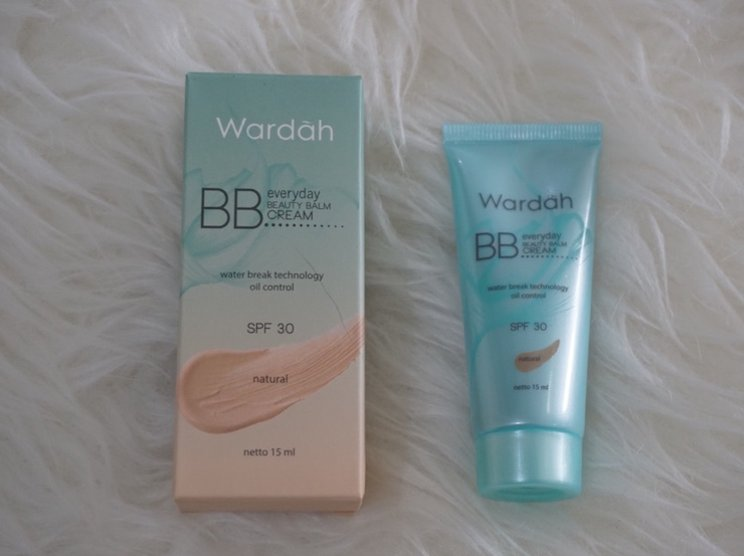
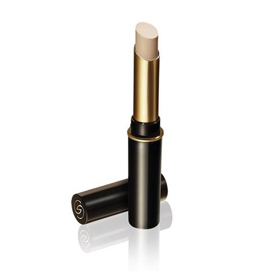
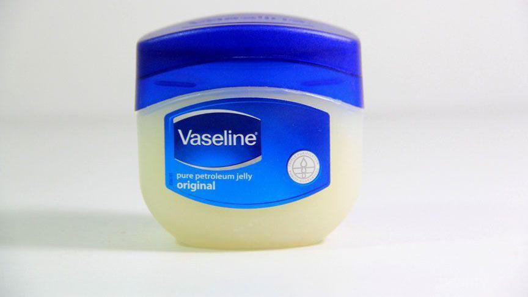
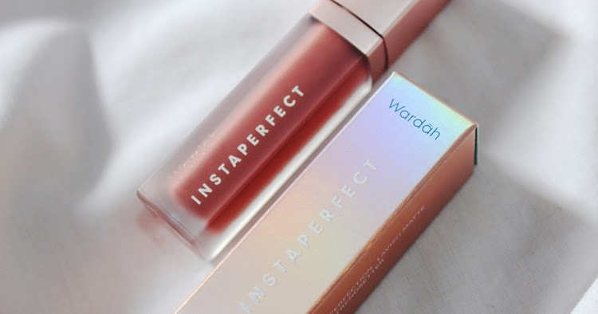
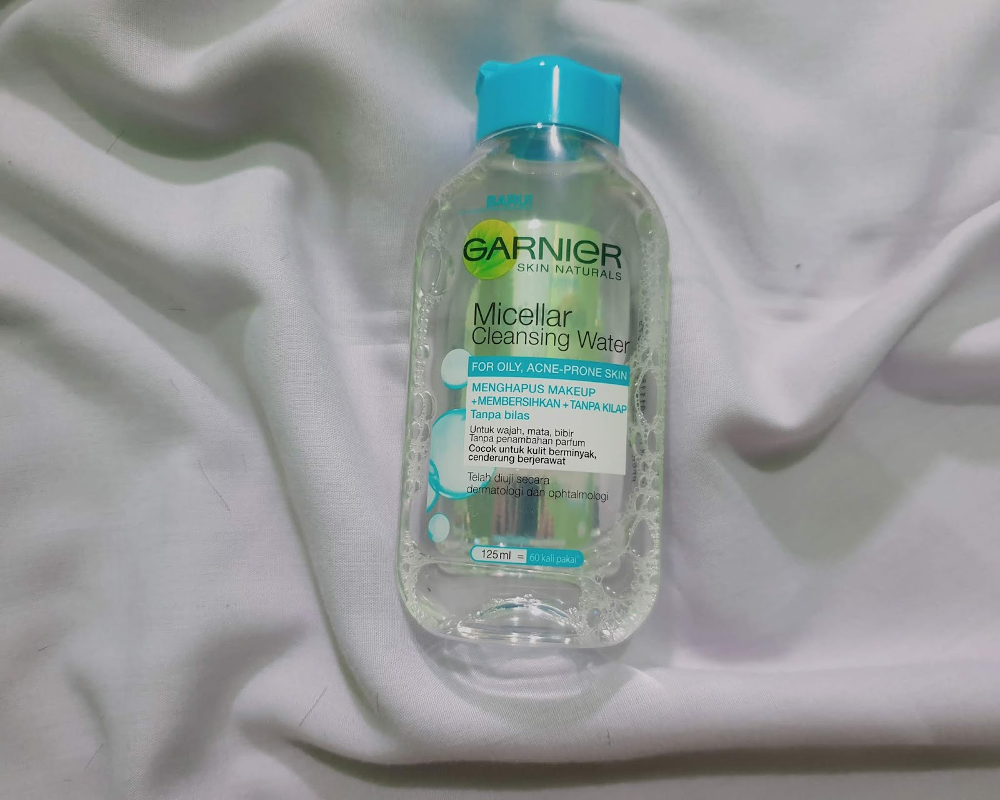
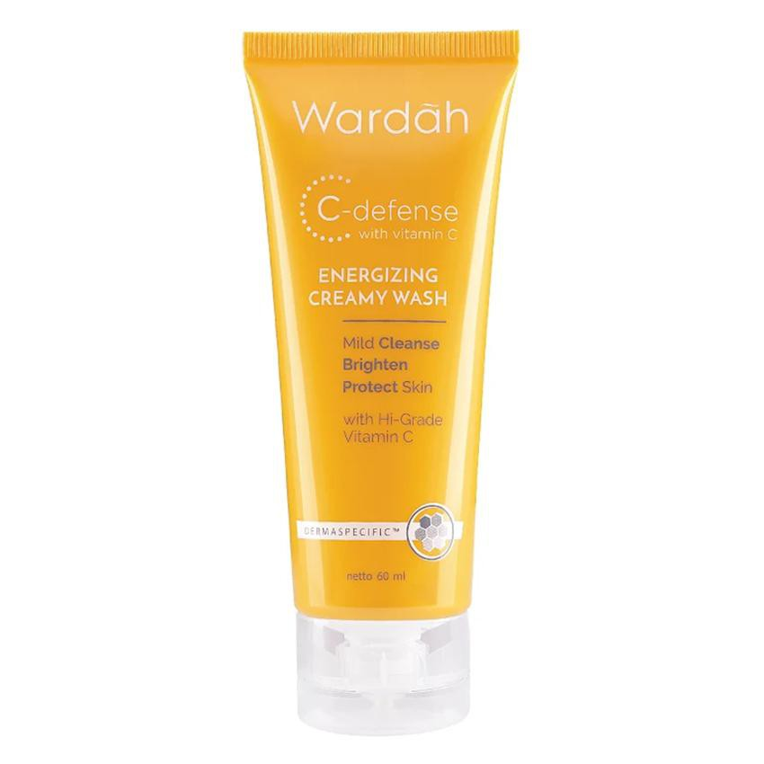
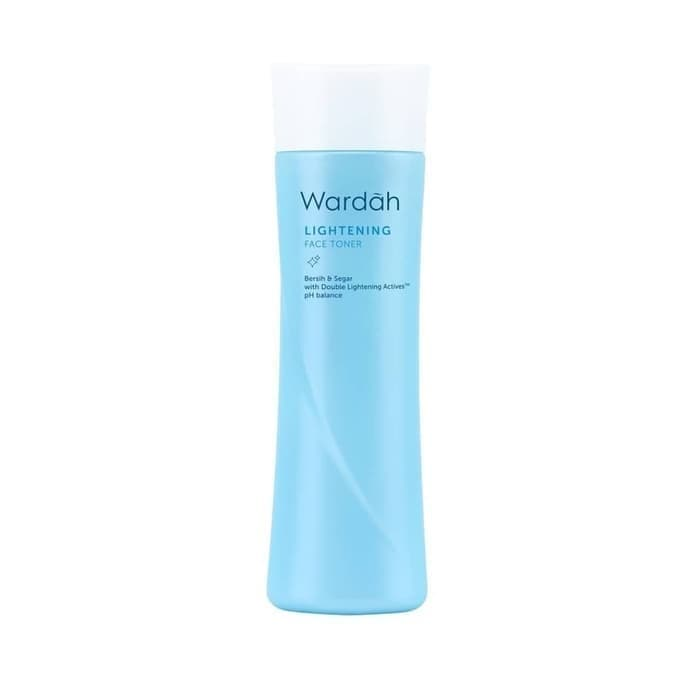
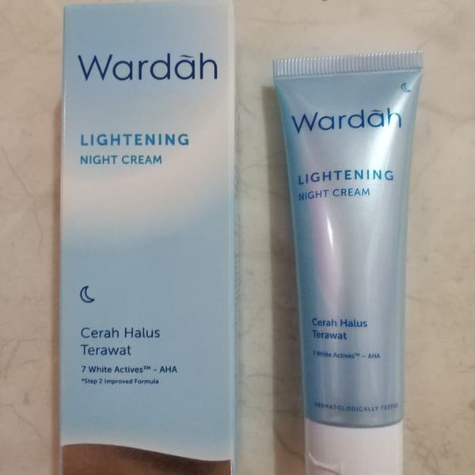

Kosmetik adalah zat perawatan yang dapat digunakan untuk meningkatkan penampilan atau aroma tubuh manusia. Kosmetik umumnya banyak dipakai oleh kaum perempuan. Campuran bahan kimia pada kosmetik sangat beragam. Tatacara dalam menggunakan kosmetik disebut dengan tata rias atau make up.
Menurut sejumlah sumber, perkembangan awal kosmetik bisa diketahui sejak bangsa Mesir Kuno menggunakan minyak jarak sebagai pengganti balsam, atau penggunaan krim kulit yang terbuat dari lilin lebah, minyak zaitun dan air mawar pada zaman romawi.
Bangsa Yunani kuno juga menggunakan kosmetik. Kosmetik disebutkan dalam kitab Perjanjian Lama.
Penggunaan kosmetik telah banyak ditentang dalam sejarah Barat. Sebagai contoh, pada abad ke-19, Ratu Victoria terang-terangan menyatakan bahwa penggunaan kosmetik adalah hal yang tidak pantas, vulgar, dan hanya boleh digunakan oleh para pemain teater. Pada abad ke-16, penggunaan kosmetik telah menyebabkan meningkatnya permintaan produk kosmetik di kalangan kelas atas. Pertengahan abad ke-20, kosmetik telah digunakan secara meluas hampir oleh semua wanita di negara-negara industri di seluruh dunia.
Review Kosmetik
Disini aku akan berusaha mereview produk-produk kosmetik yang aku pakai untuk sehari-hari. Kosmetik dibagi menjadi 2 jenis, yaitu kosmetik rias dan kosmetik perawatan
Kosmetik Rias

BB Cream
Untuk base sebelum aku menaburi bedak diwajah. Aku memakai BB Cream dari produk Wardah ini. Pengaplikasiannya ke wajah terasa ringan, sehingga cocok untuk dipakai sehari-hari. Setelah memakai ini, bekas jerawat diwajahku tersamarkan dan kulit wajah terlihat cerah dan sehat.
Untuk kamu yang ingin mencari BB Cream dengan harga dibawah 50 ribu ini bisa jadi solusi untuk kamu dan hasil nya juga tak kalah jauh dengan BB Cream yang mahal.

Concelear
Untuk kamu yang punya masallah mata panda bisa mencoba produk dari Giordani Gold Secret Concelear ini. Selain bentuknya yang praktis dibawa kemana-mana, produk ini juga dapat menyembunyikan mata panda dengan baik dan terasa ringan setelah diaplikasikan ke wajah. Untuk Sehingga kamu tak perlu takut dengan mata panda yang terlihat.

Lip Therapy
Sebelum aku mengaplikasikan lipstik ke bibir, aku memakai Vaseline Petroleum Jelly Lip Therapy ini agar bahan-bahan kimia yang terdapat pada lipstik tidak merusak kondisi bibir.
Aku juga memakainya saat ingin tidur. Setelah aku rutinkan untuk memakai produk ini, bibirku terlihat lebih sehat dan tidak gampang kering. Cocok untuk kamu yang punya permasalahn bibir kering dan terlihat kusam.

Lipstik
Salah satu favorit lipstik aku di wardah adalah varian dari Instaperfect ini. Hasil di bibir aku terlihat natural terutama di seri Glee, membuat bibir terlihat pink alami.
Lipstik ini dapat bertahan lama sekitar 4 jam an saat aku pakai.
Kosmetik Perawatan

Micellar Water
Pembersih wajah satu ini yang paling aku suka. Garnier Micellar Water punya varian pink dan blue. Karena kulit aku berjerawat maka aku pilih yang blue.
Saat aku aplikasikan terasa kotoran di wajahku gampang terangkat. Aku selalu pakai ini untuk pagi dan malam untuk menghilangkan kotoran di wajah, agar wajah terlihat lebih bersih dan cerah.

Face Wash
Sabun cuci muka yang satu ini warnanya sangat eye-catching. Dengan warna oren yang menyegarkan sehingga membuat bersemangat saat melihatnya.
Setelah memakai ini, wajah lebih terasa segar. Produk Wardah satu ini yang paling aku suka adalah wangi jeruknya yang menyegarkan.

Toner
Varian toner dari Wardah ini yang menurutku murah dan ringan saat diaplikasikan ke wajah. Wanginya juga menurutku enak. Kalian yang punya masalah kulit berminyak maupun kombinasi bisa banget mencoba produk toner ini, karena menurutku ini sangat ringan untuk kulit jenis itu.

Night Cream
Untuk Produk Night Cream dari Wardah ini merupakan favorit aku, karena produk ini terbukti mencerahkan wajah. Selama beberapa bulan aku memakai produk ini, hasil nya bisa lebih terlihat. Aku sangat merekomendasi krim ini karena aku sudah mendapatkan hasilnya :).